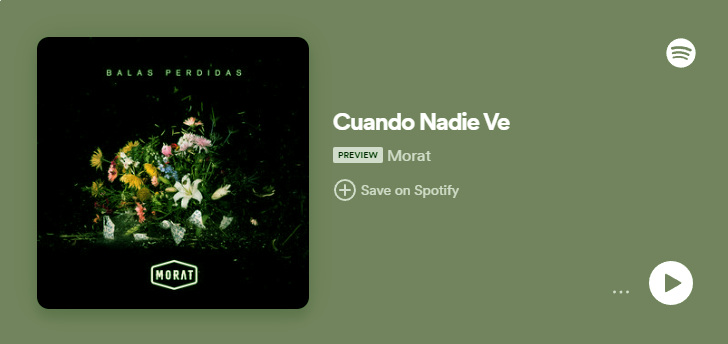
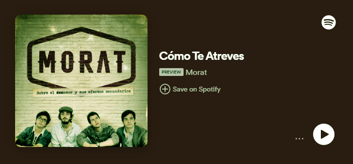
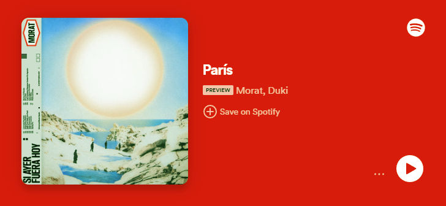

- Cuando Nadie Ve
Acumulando más de 491 millones de reproducciones en la plataforma de
streaming, este single se lanzó en 2016 como parte del primer álbum de estudio
de la agrupación llamado ‘Sobre el amor y sus efectos secundarios’.

- Cómo Te Atreves
Superando la cifra de 364 millones de reproducciones, esta melodía del álbum
‘Sobre el amor y sus efectos secundarios’ habla sobre el dolor de una ruptura
amorosa y cómo una expareja intenta volver después de haberte roto el corazón.

- París
Sumando alrededor de 139 millones de reproducciones, esta canción se lanzó en
2022 como parte del álbum “¿A dónde vamos?” y aborda ese momento en una relación
en el que debes confrontar a tu pareja al darte cuenta de que no es buena para ti.
